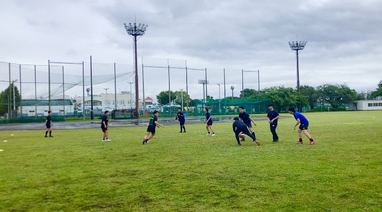
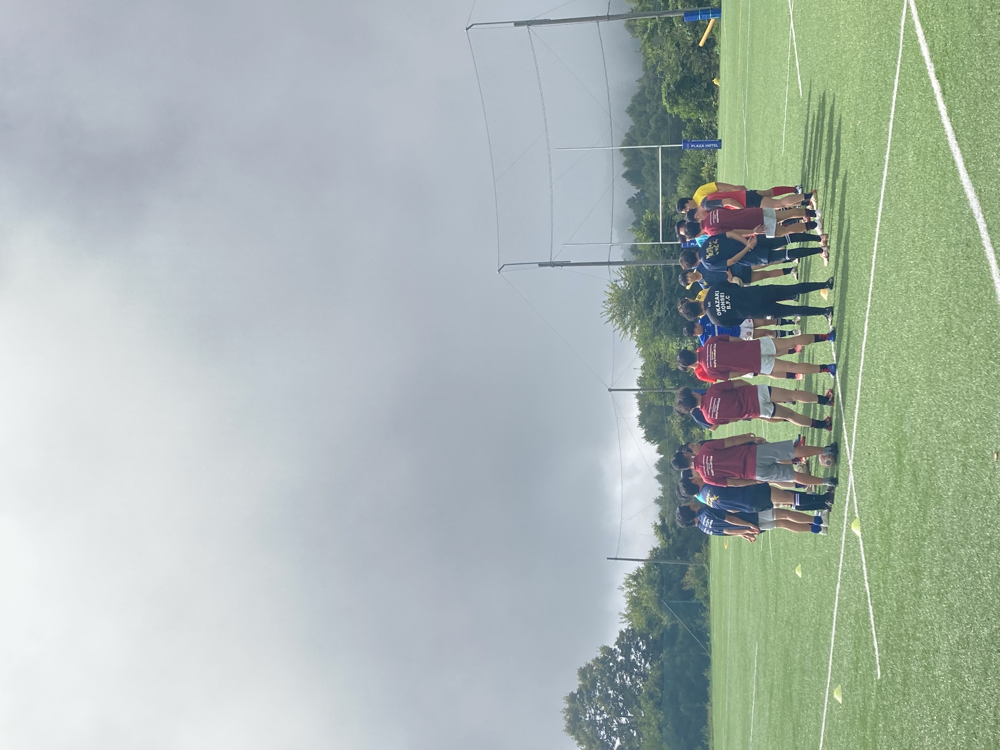
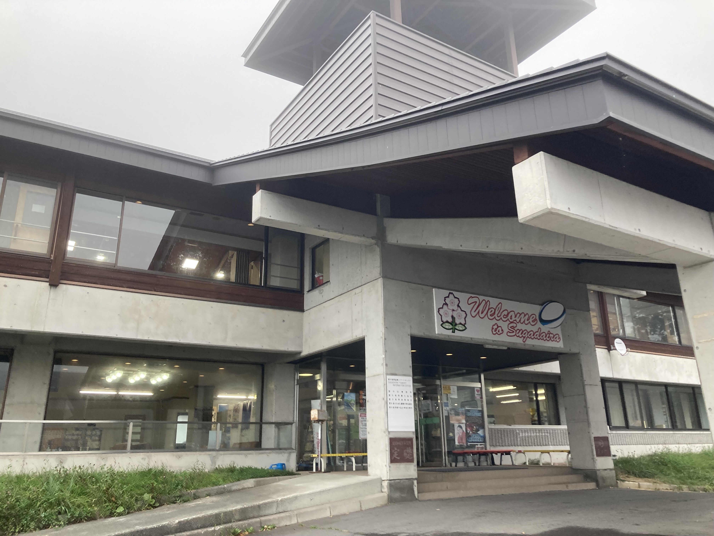

（ポスターのデザインはhttps://www.rugby-japan.jp/RugbyFamilyGuide/recruiting-tools/より使用させていただきました。）
・ラグビーを楽しみたい！
・ラグビーについて知ってみたい！
・運動不足を解消したい！
・マネージャーを経験してみたい！
・試合に出たい！etc...という方必見のサークルです♪
選手、マネージャー共に、初心者も大歓迎！
電通大、早稲田以外の大学生も大歓迎！
ラグビーの楽しさを、一緒に味わいませんか？

活動内容
日時・場所
(土)13：00～15：00 @電通大多摩川グラウンド・・・ACCESSページへ
毎月、日程調整後に練習日を決定しています。主に公式戦や合宿を控えた時期に活動しています。他チームと合同練習を組むこともあります！
テストやバイトの予定と両立させながらラグビーを楽しめます♪
年間日程(2025年時点)
4月～5月上旬
―――新入生歓迎練習会―――
新しい出会いの大きなチャンスです☆新入生をお迎えして練習見学や体験、昼食会などを開きます！今年度はリーグワンの試合観戦にも行きました！
↑新歓練習会の様子。インスタのDMで連絡をくれた方もいます。
6月中旬
―――東日本クラブセブンズ大会―――
7人制ラグビー、セブンズの大会に参加します。新年度が始まってまだ間もない時期ですが、新入生でも経験者は試合に出る可能性が十分にあります！
また、未経験者やマネージャーにとっても、参加者の一員として様々な経験ができる貴重な機会です！
↑会場となった、熊谷の荒川緑地ラグビー場。
9月上旬
―――菅平合宿―――
秋の大会に向けて、ラグビー合宿の聖地とも呼ばれる菅平で合宿が開かれます。9月以降の大会(下記参照)に向けて、練習に試合に、ラグビーに囲まれ生活します。部員同士や、合同チームの仲間との絆が深まるイベントでもあります！
↑合同チームでの練習。様々な練習に取り組める機会！

↑講習会で使用した、菅平高原国際リゾートセンター。
9月～11月下旬
―――関東学生クラブラグビー選手権大会―――
15人制の秋季大会が始まります。
11月上旬
―――早稲田祭―――
(※今年度は参加なし)
11月下旬
―――調布祭―――
電通大の学園祭です！今年度は21日~23日の3日間！ピザ販売を予定しております♪当日に向けて現在準備中です！！(※上記秋季大会と一部被る可能性あり)
その他詳細につきましては、InstagramやXのDMにてご質問、ご相談お待ちしております！電早ラグビー部はいつでも皆さんを歓迎いたします♪